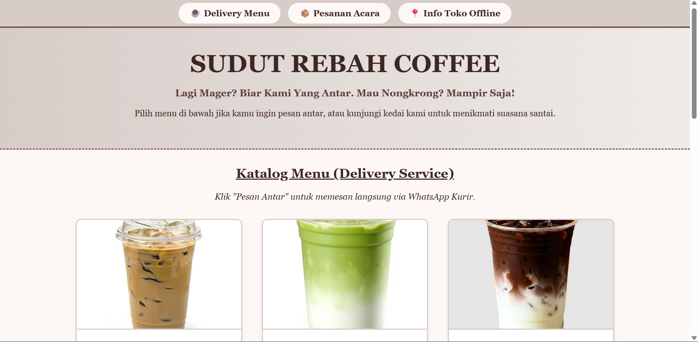
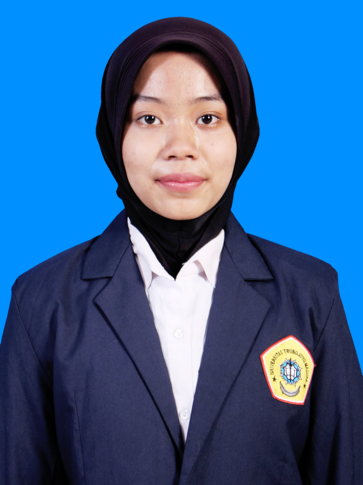
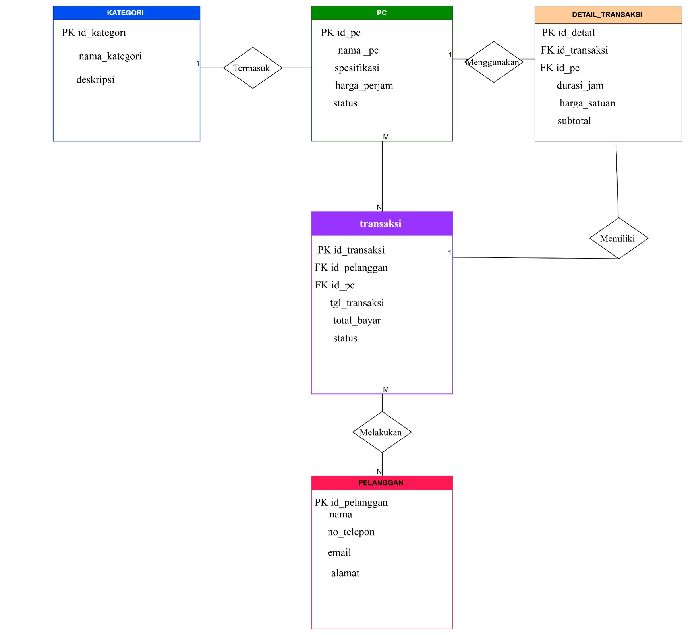

Sudut Rebah Coffee
Landing page fungsional untuk layanan pesan-antar kedai kopi. Dibangun menggunakan HTML dasar dan CSS manual untuk menonjolkan fitur katalog menu serta formulir pemesanan.
Lihat Proyek
Memiliki ketertarikan besar pada perancangan antarmuka pengguna (UI) dan pengelolaan struktur basis data. Berfokus pada penciptaan solusi teknologi yang efisien.

Landing page fungsional untuk layanan pesan-antar kedai kopi. Dibangun menggunakan HTML dasar dan CSS manual untuk menonjolkan fitur katalog menu serta formulir pemesanan.
Lihat Proyek
Perancangan Entity-Relationship Diagram (ERD) dan skema database SQL terstruktur untuk optimalisasi pencatatan transaksi rental, manajemen inventaris PC, dan data penyewa.
Lihat Proyek